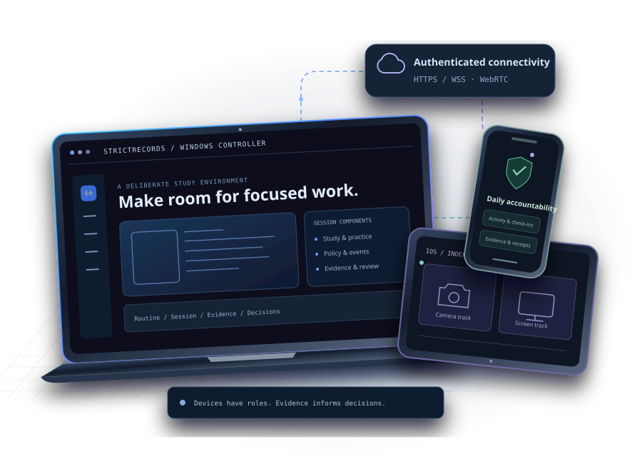

Permission comes first
Camera, screen, Usage Access, and Accessibility operate within their platform's authorization rules.
AI-powered multi-device study discipline
& integrity platform.
Turn a daily plan into deliberate action. Connect your study environment through intelligent restrictions, evidence validation, and reward-driven access.
An independent project in active development View progress ↗

THE IDEA BEHIND STRICTRECORDS
A phone, a PC, a study session. Each is useful on its own. StrictRecords brings them into one accountability workflow, helping you follow the plan after the reminder disappears.
Windows controls the Strict Session. Connected components contribute activity, media, and evidence within their actual platform permissions. Decisions come from recorded events and policy, with uncertainty kept visible.
Why we created this appFROM INTENTION TO ACTION
A clear workflow from device pairing to a record of the work you actually completed.
Pair authorized Windows, Android, iOS, and browser components with the configured device identity.
Choose your study periods, activities, proof windows, and application-specific access rules.
Windows manages the lifecycle. Connected devices contribute their actual monitoring status.
Review evidence, apply eligible rewards, and understand your day through the retained activity record.
ONE ECOSYSTEM. DISTINCT RESPONSIBILITIES.
Shared context. Platform-specific controls. Clear boundaries around what each component can do.
The Windows EXE coordinates the Strict Session lifecycle, schedules, device registration, evidence review, and policy decisions.
The Kotlin companion combines native app-usage signals with routine and proof workflows. Android permission and background-execution rules remain in force.
The secure browser companion supports camera delivery; native ReplayKit screen-sharing reference code is also present. A distributed, signed iOS app is not established by this repository.
The browser companion handles supported website and media decisions. Its permissions do not extend to controlling unrelated native applications.
ENGINEERED TO WORK TOGETHER
Control signals and visual media take different paths. The architecture keeps their roles distinct.
A tunnel is not a WebRTC media relay.
Providers and infrastructure require authorized runtime configuration.
Control view: authenticated HTTPS/WSS carries identity, policy, events, and heartbeat signals. The Windows session controller owns the session lifecycle.
PURPOSEFUL CAPABILITIES
Explore the implementation behind each capability, including its platform and verification limits.
RESTRICTIONS WITH A REASON
Media rules distinguish an ordinary restriction, a scheduled allowance, and a reward-authorized entitlement. Every exception has its own target and expiry.
Inspect the policy engine ↗8:25 PM – 9:35 PM Asia/Kolkata
This allowance applies only to SUN NXT.YouTube playback & Picture-in-Picture
Requires an eligible, active entitlement. Cross-device delivery still depends on the configured service.OBSERVABILITY BEFORE ASSUMPTIONS
Independent signals help distinguish a capture interruption from a transport, receiver, decoder, or processing failure.
Permission, capture, track state, frame generation, and control-channel heartbeat.
Actual frame arrival, decoding, processing, and freshness for each visual source.
Recovery uses session identity, connection generations, and source-specific checks. Temporary media gaps should preserve the Windows session while monitoring or study accrual is paused when required.
Explore recovery tests ↗In this model, the companion's report and the receiver's actual frame counters both indicate progress.
TRUST HAS TO BE DESIGNED IN
Explicit permission, scoped communication, and visible uncertainty are part of the engineering model.
ENGINEERING SAFEGUARDS · NO CERTIFICATION CLAIMCamera, screen, Usage Access, and Accessibility operate within their platform's authorization rules.
Authenticated, session-bound device events and retained evidence references keep decisions attributable.
The privacy shield is designed to suspend screen capture, OCR, and visual analysis on detected banking, payment, and personal pages.
Provider keys do not belong in a website, extension page, public repository, or device invitation.
The documented workflow does not log keystrokes. Windows shortcut interception is a session-control mechanism.
Evidence, approval, and credited points remain separate facts. Missing or contradictory records stay visible.
No independent security certification or complete external-recorder detection is claimed. Read the privacy-shield implementation ↗
A CLOSER LOOK
Source-guided walkthroughs with illustrative thumbnails. Public, consent-cleared video demos have not been published.
BUILT IN THE OPEN
Maintained project milestones backed by source references. Implemented code does not imply a completed live rollout.
Status reviewed . View the maintained project-status configuration ↗
GO FROM CURIOUS TO CONTRIBUTING
Real documentation. Direct paths into the project. Setup requirements and limitations included.
Live metadata from GitHub. No application telemetry is requested.
Public metadata is optional; documentation remains available if the API cannot be reached.
A FEW THINGS WORTH KNOWING
The architecture is ambitious.
The boundaries should be understandable.
MAKE YOUR TIME INTENTIONAL
Explore the code, understand the architecture,
and help shape what comes next.